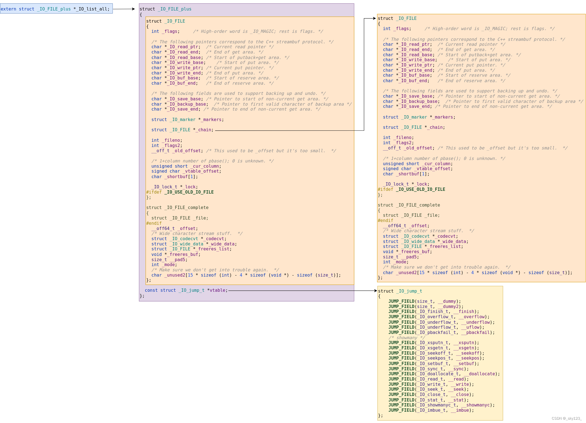
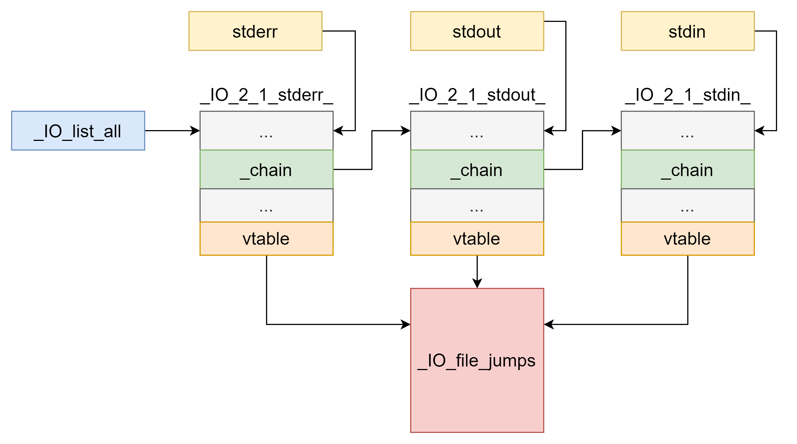

基础知识
结构
_IO_FILE结构体定义为struct _IO_FILE:
/* The tag name of this struct is _IO_FILE to preserve historic
C++ mangled names for functions taking FILE* arguments.
That name should not be used in new code. */
//glibc2.36
struct _IO_FILE
{
int _flags; /* High-order word is _IO_MAGIC; rest is flags. */
/* The following pointers correspond to the C++ streambuf protocol. */
char *_IO_read_ptr; /* Current read pointer */
char *_IO_read_end; /* End of get area. */
char *_IO_read_base; /* Start of putback+get area. */
char *_IO_write_base; /* Start of put area. */
char *_IO_write_ptr; /* Current put pointer. */
char *_IO_write_end; /* End of put area. */
char *_IO_buf_base; /* Start of reserve area. */
char *_IO_buf_end; /* End of reserve area. */
/* The following fields are used to support backing up and undo. */
char *_IO_save_base; /* Pointer to start of non-current get area. */
char *_IO_backup_base; /* Pointer to first valid character of backup area */
char *_IO_save_end; /* Pointer to end of non-current get area. */
struct _IO_marker *_markers;
struct _IO_FILE *_chain;
int _fileno;
int _flags2;
__off_t _old_offset; /* This used to be _offset but it's too small. */
/* 1+column number of pbase(); 0 is unknown. */
unsigned short _cur_column;
signed char _vtable_offset;
char _shortbuf[1];
_IO_lock_t *_lock;
#ifdef _IO_USE_OLD_IO_FILE
};
struct _IO_FILE_complete
{
struct _IO_FILE _file;
#endif
__off64_t _offset;
/* Wide character stream stuff. */
struct _IO_codecvt *_codecvt;
struct _IO_wide_data *_wide_data;
struct _IO_FILE *_freeres_list;
void *_freeres_buf;
size_t __pad5;
int _mode;
/* Make sure we don't get into trouble again. */
char _unused2[15 * sizeof (int) - 4 * sizeof (void *) - sizeof (size_t)];
};
接下来依次解释相关的结构体成员：
_flags
_flags大小为4字节，高位字为_IO_MAGIC(0xFBAD0000)，用于检查_IO_FILE的合法性
#define _IO_MAGIC 0xFBAD0000
#define _IO_MAGIC_MASK 0xFFFF0000
/*glibc中一个用于检查的宏如下*/
#define CHECK_FILE(FILE, RET) do {
if ((FILE) == NULL ||
((FILE)->_flags & _IO_MAGIC_MASK) != _IO_MAGIC) {
__set_errno (EINVAL);
return RET;
}
} while (0)
/*glibc 在遍历 _IO_list_all （全局 FILE 链表）进行 flush/unbuffer 操作时，通常使用如下方式过滤不合法的文件*/
for (fp = (FILE *) _IO_list_all; fp; fp = fp->_chain) {
if (((fp->_flags & _IO_MAGIC_MASK) != _IO_MAGIC) …)
continue;
…
}
#define _IO_MAGIC 0xFBAD0000 /* Magic number 文件结构体的魔数，用于标识文件结构体的有效性 */
#define _OLD_STDIO_MAGIC 0xFABC0000 /* Emulate old stdio 模拟旧的标准输入输出库（stdio）行为的魔数 */
#define _IO_MAGIC_MASK 0xFFFF0000 /* Magic mask 魔数掩码，用于从 _flags 变量中提取魔数部分 */
#define _IO_USER_BUF 1 /* User owns buffer; don't delete it on close. 用户拥有缓冲区，不在关闭时删除缓冲区 */
#define _IO_UNBUFFERED 2 /* Unbuffered 无缓冲模式，直接进行I/O操作，不使用缓冲区 */
#define _IO_NO_READS 4 /* Reading not allowed 不允许读取操作 */
#define _IO_NO_WRITES 8 /* Writing not allowed 不允许写入操作 */
#define _IO_EOF_SEEN 0x10 /* EOF seen 已经到达文件结尾（EOF） */
#define _IO_ERR_SEEN 0x20 /* Error seen 已经发生错误 */
#define _IO_DELETE_DONT_CLOSE 0x40 /* Don't call close(_fileno) on cleanup. 不关闭文件描述符 _fileno，在清理时不调用 close 函数 */
#define _IO_LINKED 0x80 /* Set if linked (using _chain) to streambuf::_list_all. 链接到一个链表（使用 _chain 指针），用于 streambuf::_list_all */
#define _IO_IN_BACKUP 0x100 /* In backup 处于备份模式 */
#define _IO_LINE_BUF 0x200 /* Line buffered 行缓冲模式，在输出新行时刷新缓冲区 */
#define _IO_TIED_PUT_GET 0x400 /* Set if put and get pointer logically tied. 在输出和输入指针逻辑上绑定时设置 */
#define _IO_CURRENTLY_PUTTING 0x800 /* Currently putting 当前正在执行 put 操作 */
#define _IO_IS_APPENDING 0x1000 /* Is appending 处于附加模式（在文件末尾追加内容） */
#define _IO_IS_FILEBUF 0x2000 /* Is file buffer 是一个文件缓冲区 */
#define _IO_BAD_SEEN 0x4000 /* Bad seen 遇到错误（bad flag set） */
#define _IO_USER_LOCK 0x8000 /* User lock 用户锁定，防止其他线程访问 */
IO_read_xx
char *_IO_read_ptr; /* Current read pointer */
char *_IO_read_end; /* End of get area. */
char *_IO_read_base; /* Start of putback+get area. */
_IO_read_ptr：正在使用的input缓冲区的input地址
- _IO_read_end：input缓冲区的结束地址
- _IO_read_base：input缓冲区的基地址，地址固定
_IO_read_ptr - _IO_read_base 就是**缓冲区里已经消耗掉的数据长度**
缓冲区内存布局
+---+---+---+---+---+---+
| H | e | l | l | o | \n|
+---+---+---+---+---+---+
^ ^
| |
_IO_read_base _IO_read_end
|
+--> _IO_read_ptr (初始时等于 _IO_read_base)
调用 fgetc 一次后:
+---+---+---+---+---+---+
| H | e | l | l | o | \n|
+---+---+---+---+---+---+
^ ^
| |
_IO_read_ptr _IO_read_end
IO_write_xx
char *_IO_write_base; /* Start of put area. */
char *_IO_write_ptr; /* Current put pointer. */
char *_IO_write_end; /* End of put area. */
_IO_write_base：output缓冲区的基地址
- _IO_write_ptr：指向还未输出的字节
- _IO_write_end：output缓冲去结束的地址
IO_buf_xx
char *_IO_buf_base; /* Start of reserve area. */
char *_IO_buf_end; /* End of reserve area. */
_IO_buf_base：input和output缓冲区的基址
- _IO_buf_end：input和output缓冲区的结束地址
_IO_buf_base _IO_buf_end
| |
v v
+----+----+----+----+----+----+----+----+
| | | | | | | | |
+----+----+----+----+----+----+----+----+
^ ^----^
| | |
| | +-- _IO_read_end 或 _IO_write_end
| +------- _IO_read_ptr 或 _IO_write_ptr
+---------------- _IO_read_base 或 _IO_write_base
_IO_buf_base ~ _IO_buf_end：实际 buffer 的范围。
- _IO_read_base ~ _IO_read_end：当前读数据的“窗口”。
- _IO_write_base ~ _IO_write_end：当前写数据的“窗口”。
两个窗口一般不会同时活跃（取决于_flag为读模式还是写模式）
chain
为_IO_FILE *类型，存放着一个单链表，用于**串联所有的file stream**（其实就是_IO_FILE结构体），表头通过_IO_list_all指针访问，注意_IO_list_all便是_IO_FILE_plus *类型的。结构如下所示

fileno
int _fileno;
FILE *流所对应的内核文件描述符(fd)
- 0：stdin
- 1：stdout
- 2：stderr
vtable_offset
signed char _vtable_offset;
struct _IO_FILE到其 vtable(虚函数表) 指针的偏移/索引调整
glibc 的 IO 体系把 vtable(函数指针表) 放在结构体末尾或经由偏移引用，_vtable_offset 用于定位正确的 vtable
vtable
存在于另一结构体中
struct _IO_FILE_plus//_IO_FILE_plus就是_IO_FILE
{
_IO_FILE file;
const struct _IO_jump_t *vtable;
};
简单来说，就是一张**存放函数指针的跳转表**，当 libc 要对 FILE *做具体操作的时候，它部直接调用某个固定函数，而是通过这张表的对应槽间接跳转到实现函数
可以看_IO_jump_t结构体定义:
struct _IO_jump_t
{
JUMP_FIELD(size_t, __dummy);
JUMP_FIELD(size_t, __dummy2);
JUMP_FIELD(_IO_finish_t, __finish);
JUMP_FIELD(_IO_overflow_t, __overflow);
JUMP_FIELD(_IO_underflow_t, __underflow);
JUMP_FIELD(_IO_underflow_t, __uflow);
JUMP_FIELD(_IO_pbackfail_t, __pbackfail);
/* showmany */
JUMP_FIELD(_IO_xsputn_t, __xsputn);
JUMP_FIELD(_IO_xsgetn_t, __xsgetn);
JUMP_FIELD(_IO_seekoff_t, __seekoff);
JUMP_FIELD(_IO_seekpos_t, __seekpos);
JUMP_FIELD(_IO_setbuf_t, __setbuf);
JUMP_FIELD(_IO_sync_t, __sync);
JUMP_FIELD(_IO_doallocate_t, __doallocate);
JUMP_FIELD(_IO_read_t, __read);
JUMP_FIELD(_IO_write_t, __write);
JUMP_FIELD(_IO_seek_t, __seek);
JUMP_FIELD(_IO_close_t, __close);
JUMP_FIELD(_IO_stat_t, __stat);
JUMP_FIELD(_IO_showmanyc_t, __showmanyc);
JUMP_FIELD(_IO_imbue_t, __imbue);
};
整体结构
各个文件结构采用 单链表 的形式连接起来（可见上面的[[_IO_FILE基础知识#chain]])
vtable为函数指针结构体，存放着各种 IO 相关的函数的指针
初始情况下 _IO_FILE 结构有 _IO_2_1_stderr，_IO_2_1_stdout_，_IO_2_1_stdin_三个，通过_IO_list_all将这三个结构统一
# define DEF_STDFILE(NAME, FD, CHAIN, FLAGS) \
static _IO_lock_t _IO_stdfile_##FD##_lock = _IO_lock_initializer; \
static struct _IO_wide_data _IO_wide_data_##FD \
= { ._wide_vtable = &_IO_wfile_jumps }; \
struct _IO_FILE_plus NAME \
= {FILEBUF_LITERAL(CHAIN, FLAGS, FD, &_IO_wide_data_##FD), \
&_IO_file_jumps}
DEF_STDFILE(_IO_2_1_stdin_, 0, 0, _IO_NO_WRITES);
DEF_STDFILE(_IO_2_1_stdout_, 1, &_IO_2_1_stdin_, _IO_NO_READS);
DEF_STDFILE(_IO_2_1_stderr_, 2, &_IO_2_1_stdout_, _IO_NO_READS+_IO_UNBUFFERED);
struct _IO_FILE_plus *_IO_list_all = &_IO_2_1_stderr_;
libc_hidden_data_def (_IO_list_all)
并设置 stdin、stdout、stderr 分别指向_IO_2_1_stdin_、_IO_2_1_stdout_ 三个结构体
FILE *stdin = (FILE *) &_IO_2_1_stdin_;
FILE *stdout = (FILE *) &_IO_2_1_stdout_;
FILE *stderr = (FILE *) &_IO_2_1_stderr_;
整体结构如下：

如果存在读写操作，则会为对应文件创建一个_IO_FILE结构体，并且链接到_IO_list_all链表上
void
_IO_link_in (struct _IO_FILE_plus *fp)
{
if ((fp->file._flags & _IO_LINKED) == 0)
{
fp->file._flags |= _IO_LINKED;
#ifdef _IO_MTSAFE_IO
_IO_cleanup_region_start_noarg (flush_cleanup);
_IO_lock_lock (list_all_lock);
run_fp = (FILE *) fp;
_IO_flockfile ((FILE *) fp);
#endif
fp->file._chain = (FILE *) _IO_list_all;
_IO_list_all = fp;
#ifdef _IO_MTSAFE_IO
_IO_funlockfile ((FILE *) fp);
run_fp = NULL;
_IO_lock_unlock (list_all_lock);
_IO_cleanup_region_end (0);
#endif
}
}
偏移情况
amd64：
0x0:'_flags',
0x8:'_IO_read_ptr',
0x10:'_IO_read_end',
0x18:'_IO_read_base',
0x20:'_IO_write_base',
0x28:'_IO_write_ptr',
0x30:'_IO_write_end',
0x38:'_IO_buf_base',
0x40:'_IO_buf_end',
0x48:'_IO_save_base',
0x50:'_IO_backup_base',
0x58:'_IO_save_end',
0x60:'_markers',
0x68:'_chain',
0x70:'_fileno',
0x74:'_flags2',
0x78:'_old_offset',
0x80:'_cur_column',
0x82:'_vtable_offset',
0x83:'_shortbuf',
0x88:'_lock',
0x90:'_offset',
0x98:'_codecvt',
0xa0:'_wide_data',
0xa8:'_freeres_list',
0xb0:'_freeres_buf',
0xb8:'__pad5',
0xc0:'_mode',
0xc4:'_unused2',
0xd8:'vtable'